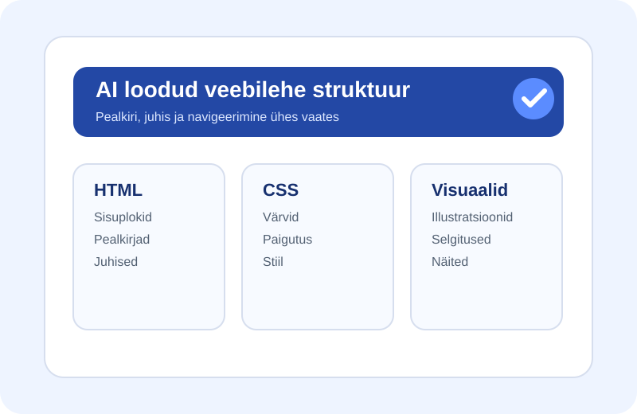
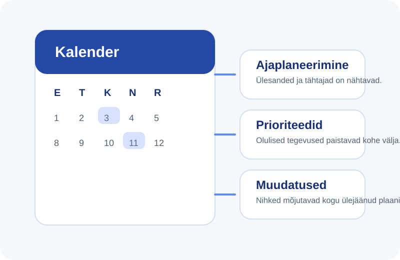

index.html loomine
HTML-faili lisati lehe pealkiri, sisuplokid ja jaotused, et info oleks loetav ning jagatud loogilisteks sammudeks.
Dokumentatsioon
Sellel lehel on kirjeldatud, kuidas valmis AI abil lihtne kalendri teemaline veebileht, kuidas sisu täiendati ning kuidas kalender aitab ajakava paremini planeerida.
Eesmärk oli koostada selge ja arusaadav veebileht, mis näitab samm-sammult, kuidas AI saab aidata nii veebilehe struktuuri loomisel kui ka sisu kujundamisel. Tulemuseks on dokumenteeriv leht, kus on olemas pealkiri, juhendavad tekstid ja illustratiivsed pildid.
AI abil genereeriti veebilehe põhifailid index.html ja style.css, millele ehitati kogu dokumentatsiooni ülesehitus.
HTML-faili lisati lehe pealkiri, sisuplokid ja jaotused, et info oleks loetav ning jagatud loogilisteks sammudeks.
CSS-fail määrab värvid, vahed, plokkide paigutuse ja üldise visuaalse stiili, et dokumentatsioon näeks puhas ja kaasaegne välja.
Lehele lisati selge pealkiri, lühike juhend ning teemaga seotud illustratsioonid, mis aitavad teksti paremini mõista.


Pärast automaatset loomist täiendati veebilehte oma selgituste ja piltidega, et tulemus oleks isikupärasem ja sisukam.
Oma sõnadega kirjeldati, mida iga samm tähendab ja miks see oluline on. See aitab näidata, et tegemist ei ole ainult automaatselt loodud lehega, vaid läbimõeldud ja täiendatud tööga.
Dokumentatsiooni juurde lisati lihtsad illustratsioonid, mis näitavad veebilehe ülesehitust ja kalendri mõju ajakavale. Need pildid aitavad kiiresti mõista peamisi ideid ilma pikka teksti lugemata.
Visuaalid toimivad näidetena sellest, kuidas veebilehte saab muuta huvitavamaks ja professionaalsemaks.
Kalender mõjutab otseselt ajakava, sest see aitab tegevused õigesse järjekorda paigutada ja muudab kogu tööprotsessi paremini jälgitavaks.
Kalender näitab, millal ülesanded algavad ja lõpevad. Nii on lihtsam jagada töö väiksemateks etappideks ja vältida olukorda, kus kõik jääb viimasele hetkele.
Kui kõik tegevused on kalendris nähtavad, saab kiirelt otsustada, millised ülesanded on kõige tähtsamad ja millised võivad oodata.
Kui üks tegevus nihkub, on kohe näha, kuidas see mõjutab ülejäänud ajakava. See aitab paremini reageerida muudatustele ja hoida plaani kontrolli all.
Kalender ei ole ainult kuupäevade nimekiri, vaid praktiline tööriist, mis aitab aega jagada, tegevusi siduda ja kogu projekti edenemist paremini hallata. Seetõttu mõjutab kalender otseselt seda, kui hästi õnnestub ajakavast kinni pidada.